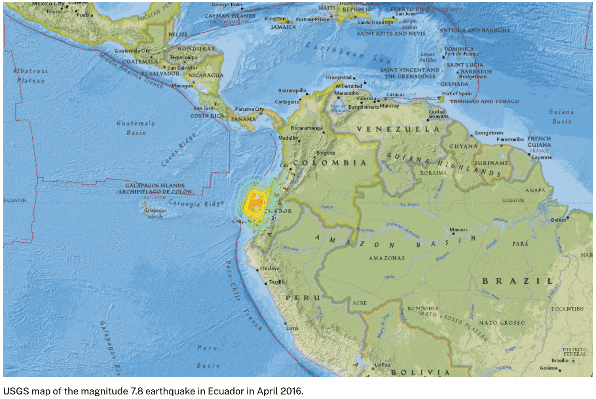
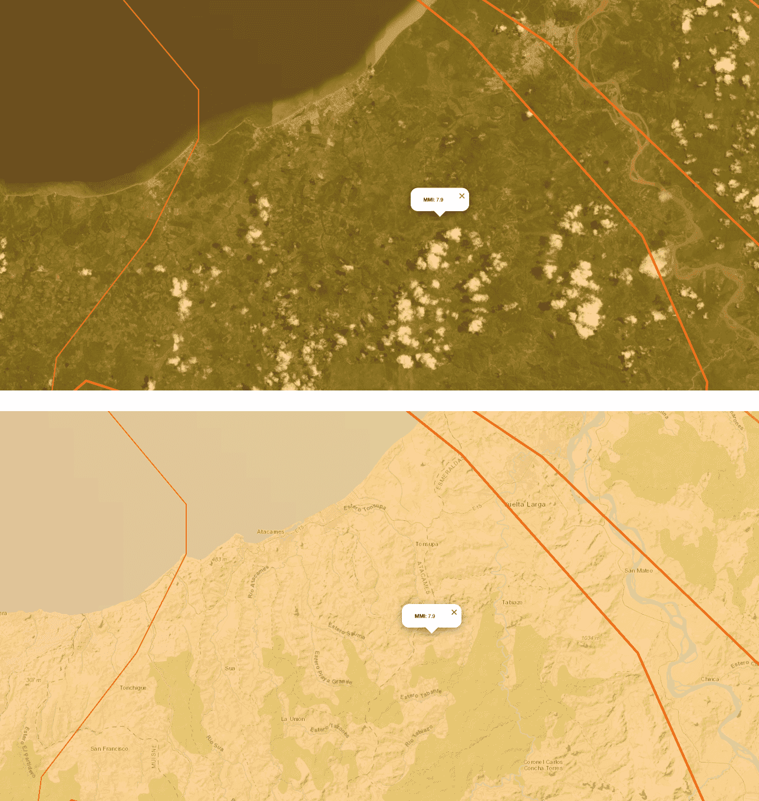
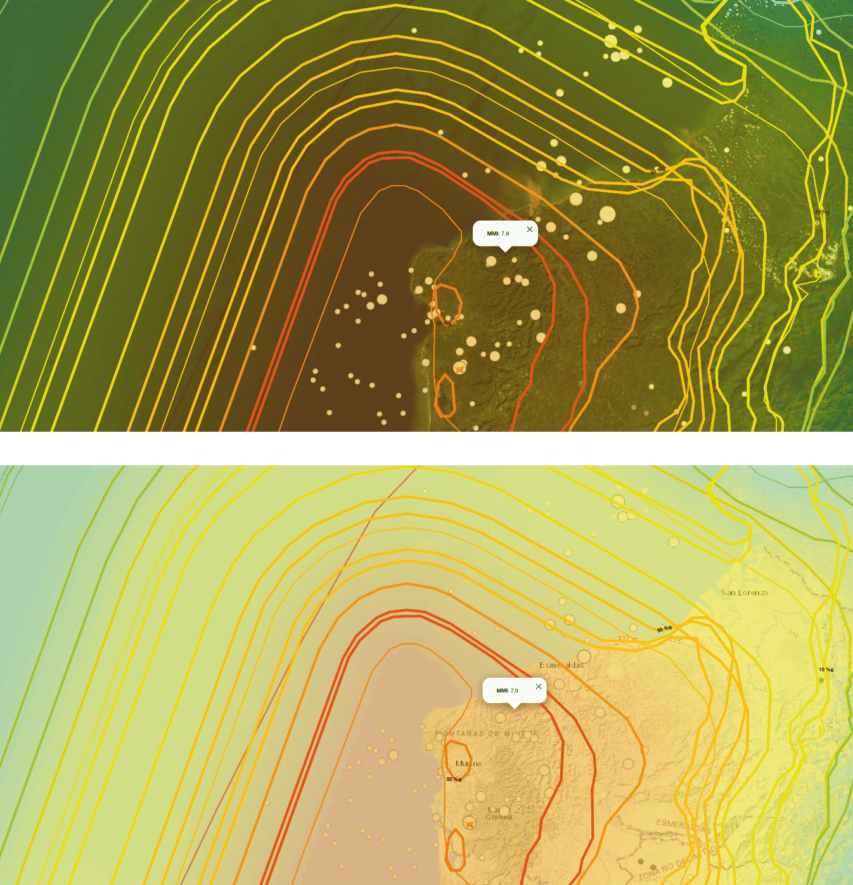
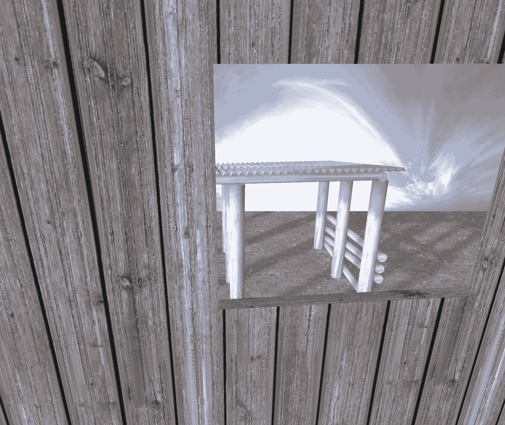
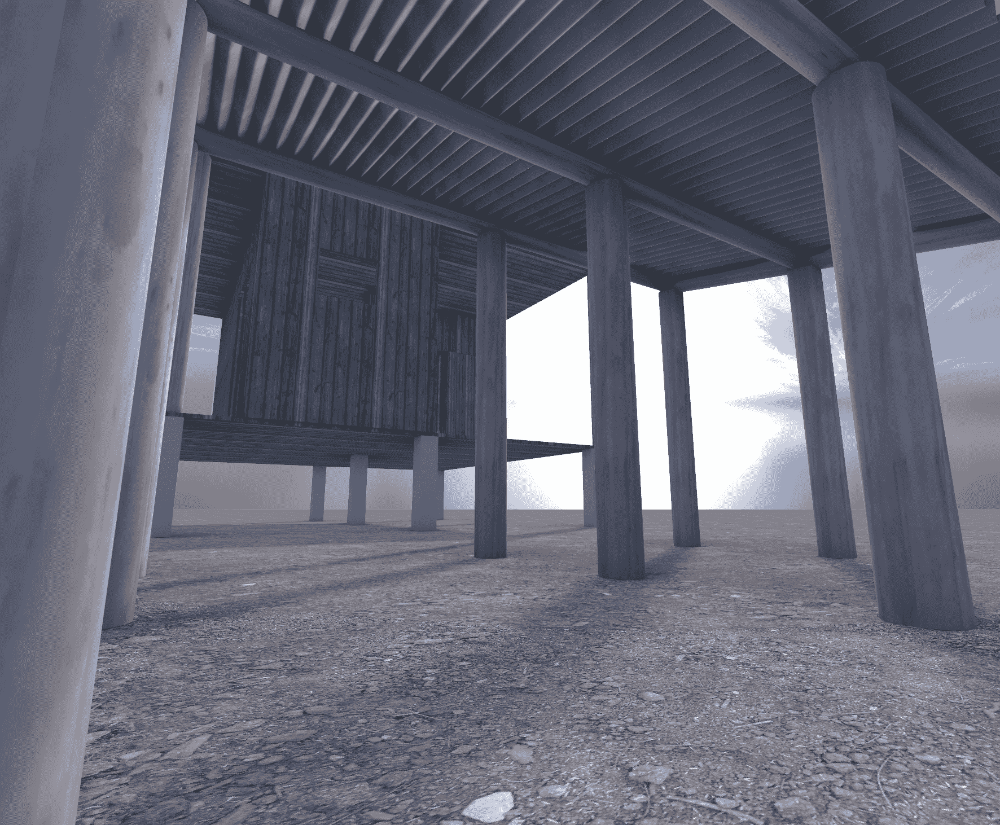
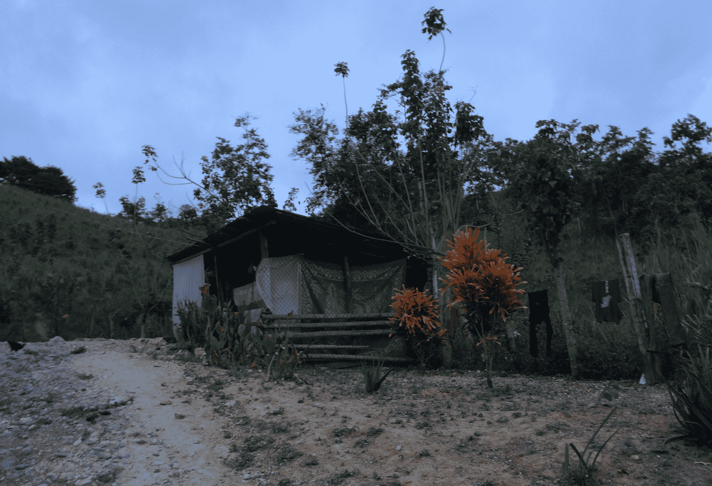
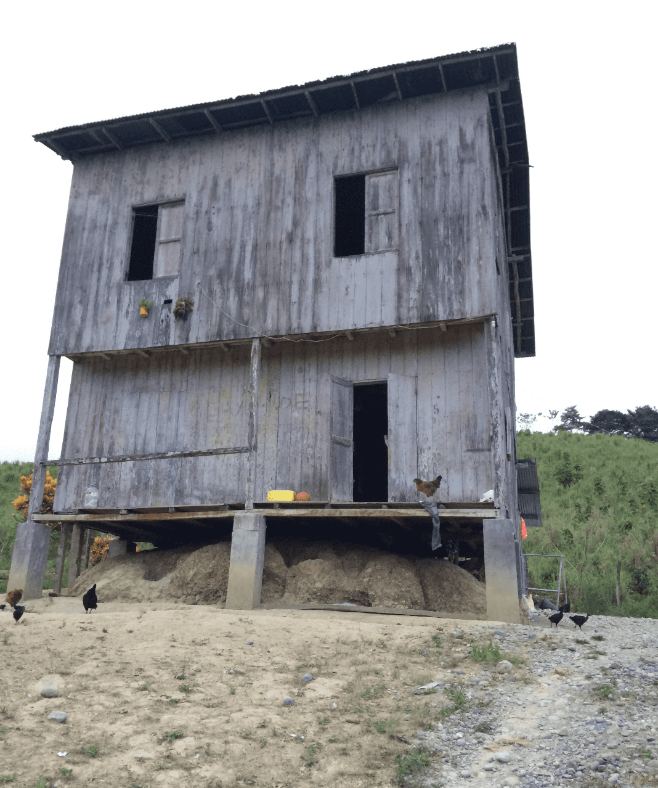

safe places
2016, April 16, 18:58:37. An Earthquake with a moment magnitude of 7.8 hits the town of Muisne in the north-coats of Ecuador. I am at that moment participating in a course on Development cooperation and how to react to humanitarian crisis as well-developed European citizens. We decide to go to an area affected by that Earthquake a few months after to help rebuilt a local school which has established its own, working infrastructure. We are coming with our hands, will-power, minds, and money to participate in existing processes. We sleep in families that share their homes to us – their safe places that overnight have become unsafe.
in this sequence of images, models, collages and animations, I am trying to reconstruct and simulate the feeling the tremors must have left them with. I use my own memories of staying there, the images I have from that time and place and related footage I get from open-source.







I experience with how to use animation in blender to have a more immediate experience